Un mismo material dramatúrgico, creado en simultáneo en dos ciudades. Dos puestas en escena que se miran de un lado al otro del Atlántico, unidas por un estreno compartido.
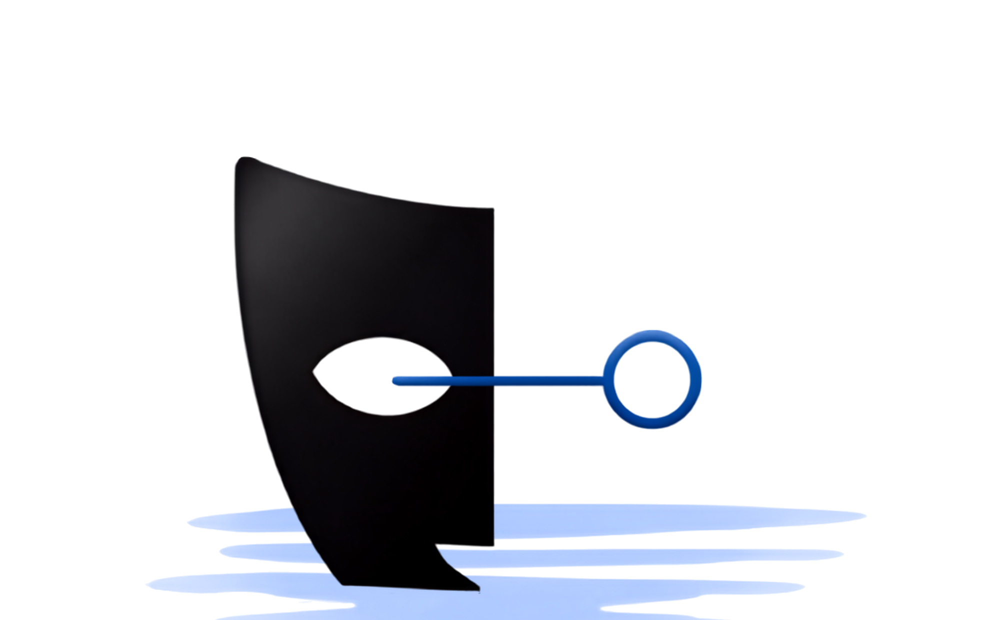
Teatro Espejado conecta Madrid y Buenos Aires a través de un proceso creativo colaborativo entre artistas de ambas ciudades.
Un mismo material dramatúrgico se desarrolla en simultáneo en los dos territorios, dando lugar a dos puestas en escena diferentes y a un estreno que ocurre al mismo tiempo en ambas orillas. El abordaje es cooperativo, con un diferencial: la distancia. Lejos de ser una frontera, es unión — durante todo el proceso los artistas trabajan en conjunto, y a través de un dispositivo tecnológico el público podrá acceder en vivo a la función que transcurre, en simultáneo, en la otra ciudad.
Estamos preparando nuestra primera edición: nuestra primera aventura.
En su cumpleaños, Paula y Tomás —hermanos mellizos distanciados tras la muerte de sus padres— se reencuentran. Paula llega sin aviso, abrumada por el derrumbe de su matrimonio, a buscar refugio en lo que queda de su familia de origen. Allí irrumpe en la nueva vida que Tomás está construyendo junto a Roma, su pareja mucho más joven y con una visión moderna de los vínculos.
Durante una larga noche, el choque de realidades, los recuerdos y las revelaciones saldrán a la luz, amenazando los proyectos de Tomás y transformando la relación de los hermanos para siempre.
Una comedia dramática de Carolina Sturla que explora las contradicciones de los lazos entre hermanos y la ineludible necesidad de reconstruir el pasado para poder seguir adelante. Se desarrolla en un único espacio escénico y construye su potencia a partir del trabajo actoral, el texto y los pequeños gestos de la vida cotidiana.
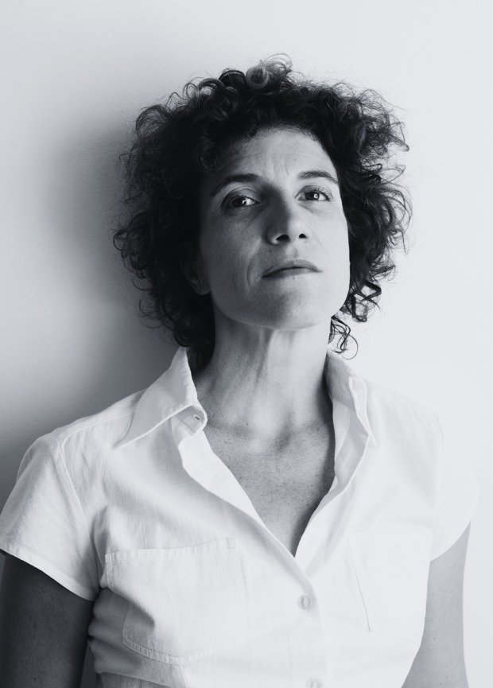
Formada en el I.V.A. y el I.U.N.A., continuó sus estudios en Commedia dell'arte en Italia. Como directora se destacan sus proyectos Iberescena — entre ellos El bien más preciado y Contra-tiempo, estrenado en la Fundación Antonio Pérez de Cuenca. Desde Calema Producciones trabaja en la investigación y fusión de disciplinas, con foco en la búsqueda de nuevos lenguajes escénicos.
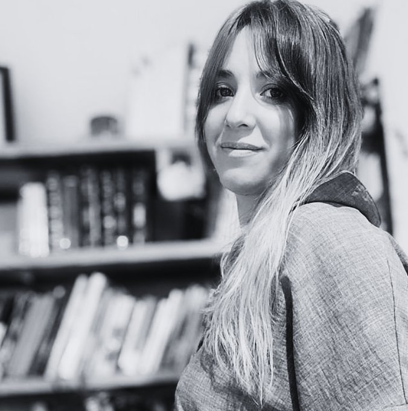
Gestora cultural, productora y escritora. Licenciada en Ciencias de la Comunicación (UBA) y en Artes Escénicas (COSATyC), con posgrado en Gestión Cultural. Trabajó más de diez años como productora ejecutiva en el circuito teatral porteño y fue coordinadora de producción en el Ministerio de Cultura de la Ciudad de Buenos Aires.
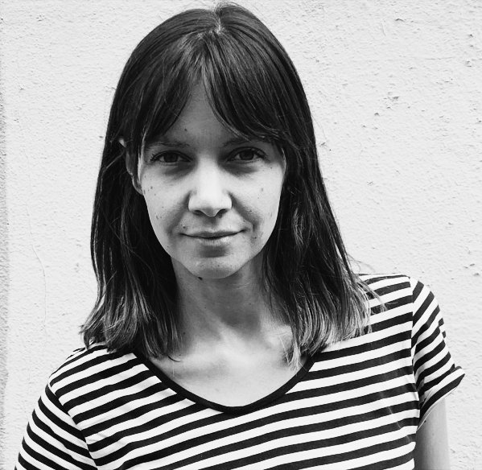
DramaturgiaDramaturga, directora, gestora cultural y actriz. Licenciada en Psicología (UBA) y magíster en Dramaturgia (UNA). Co-creadora de la Feria de Dramaturgias_Fedras.
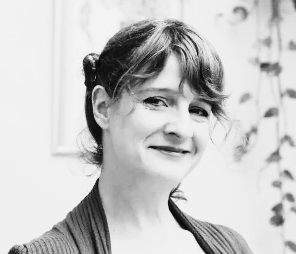
Dirección — ArgentinaActriz y docente de teatro formada con Alejandra Boero, Verónica Oddó y Juan Carlos Gené. Profesora Nacional de Teatro (IUNA) y docente en Timbre 4.
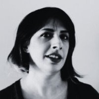
Producción comercialProductora cultural especializada en artes escénicas. Productora comercial del Teatro Politeama y coordinadora de festivales como FETEMU y Exporteatro.
Cada personaje toma dos cuerpos, uno en cada ciudad: los mismos vínculos, interpretados por dos elencos que nunca comparten escenario, pero sí una misma noche.
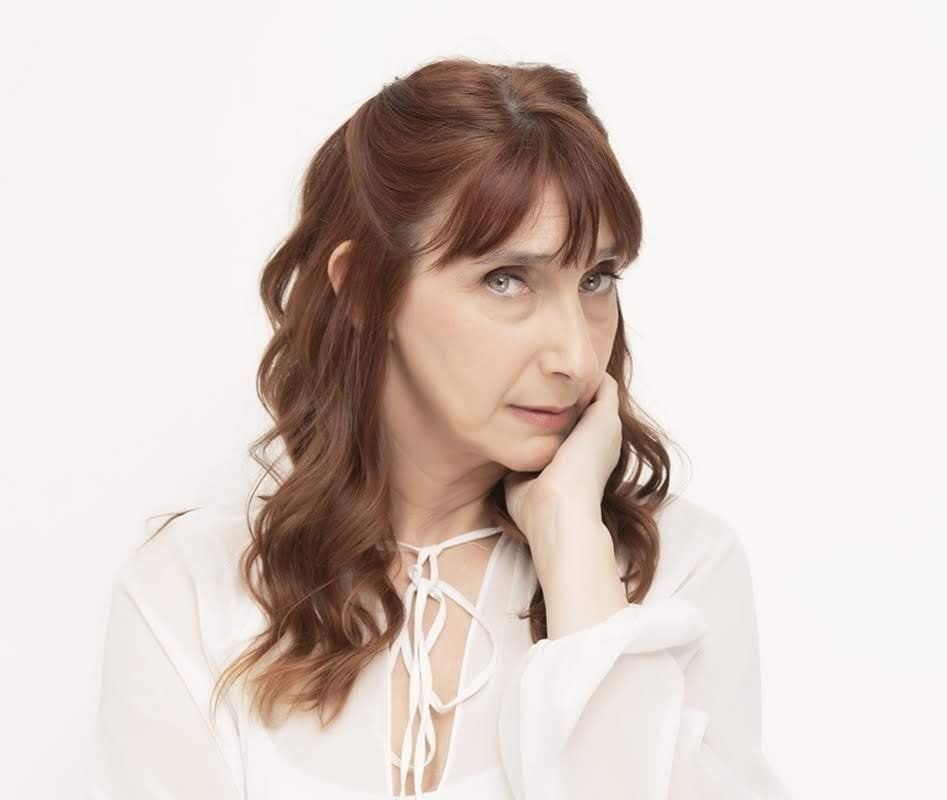
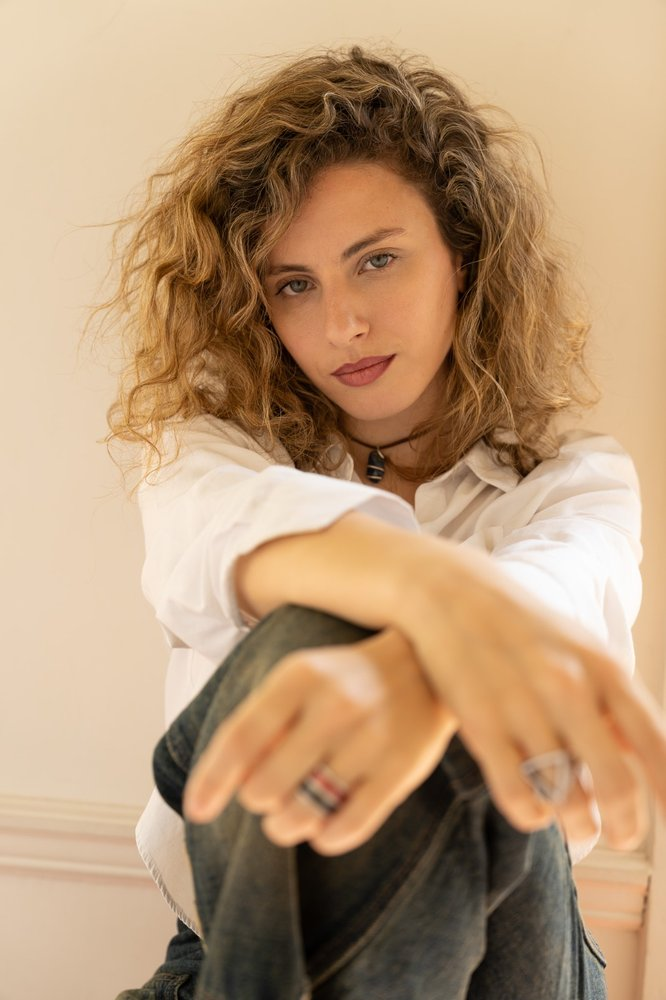
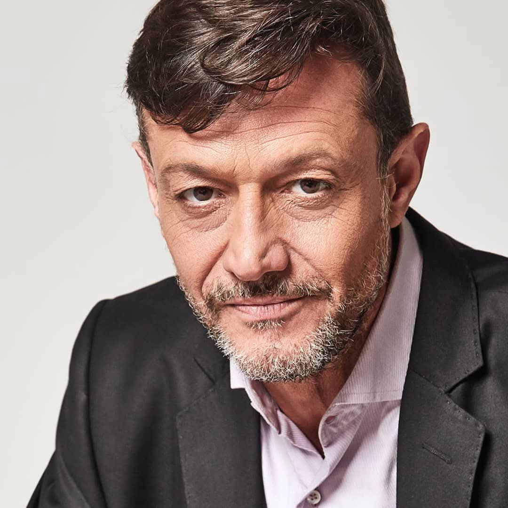
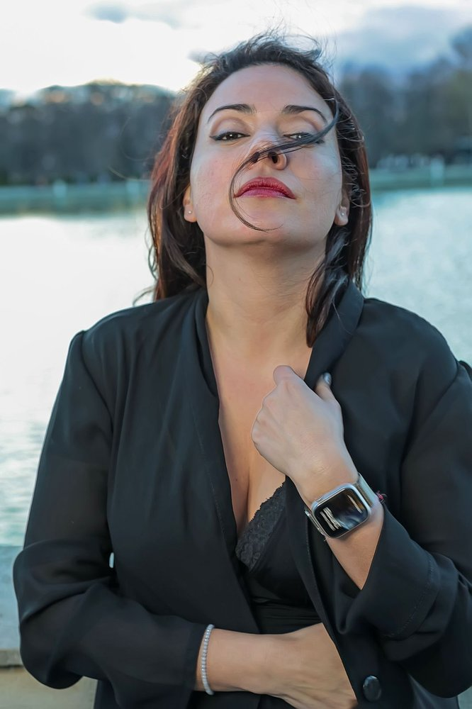
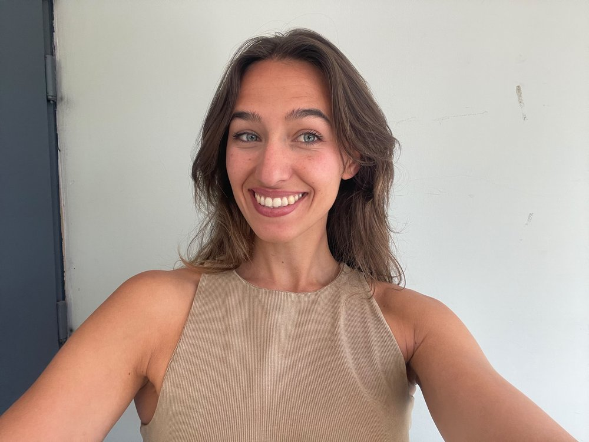
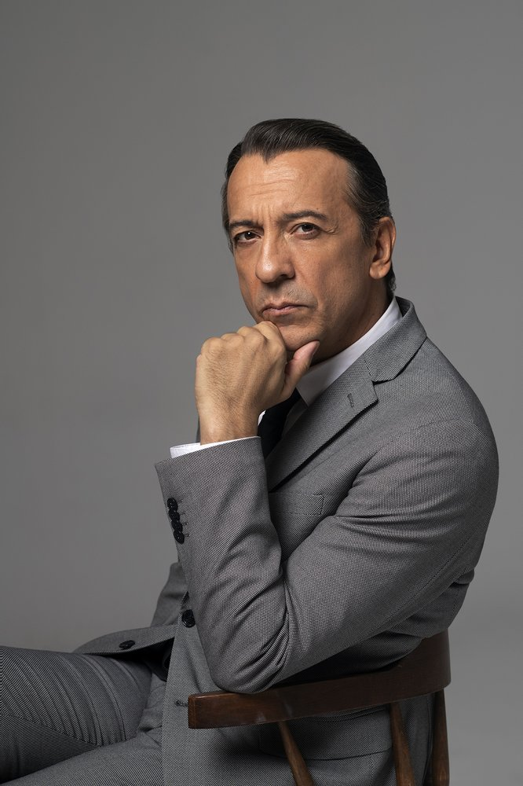